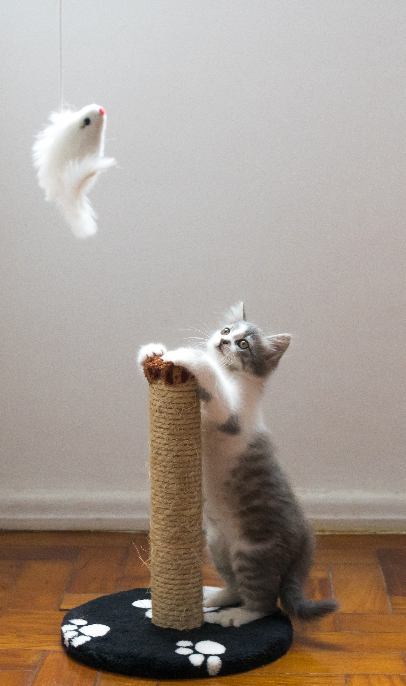

Entrenamiento básico para gatos
Una vez el gato se muestre adaptado a su nuevo entorno, será el momento de empezar a enseñarle algunas cosas que te explicamos a continuación para que sepas cómo educar a un gato desde que es pequeño.
Usar el rascador
Es recomendable disponer de un rascador desde el primer día y motivarlo para que juegue con él de forma regular para que vuestro gato aprenda a usarlo. Para ello, podemos elegir un rascador dinámico, que incluya juguetes y otros objetos. Si no, bastará con estimularle nosotros mismos, de esta forma evitaremos la destructividad hacia los muebles del hogar.
Usar el arenero
Debemos elegir uno que tenga fácil acceso y le llevaremos hasta allí después de comer, al despertarse o después de una sesión intensa de juegos. Cada vez que lo haga bien le premiaremos y, si hiciera sus necesidades en otro lugar de forma frecuente, desplazaríamos el arenero hasta esa zona para poder felicitarle luego.
Uso de juguetes
Al gato pequeño se le deben proporcionar juguetes para que aprenda a "cazar". Con juguetes muy simples, el gato se lo pasará estupendamente.
Si tú le lanzas los objetos llegará el punto en que te los traerá con la boca para que puedas lanzarlos de nuevo. La clave para motivarle a jugar es estar presente en el juego. Si no pasamos tiempo con él, pronto se aburrirá con los juguetes que tiene.

No arañar o morder
- A partir de las tres semanas, cada vez que el gato nos muerda o arañe emitiremos un pequeño chillido y dejaremos de jugar con él. Ya que el juego es algo muy importante en esta etapa, el gato empezará a relacionar el fin del juego con su actitud arisca.
- Evita sobreexcitar a tu gatito para que no tienda a morder o arañar.
- Utiliza juguetes tipo caña de pescar para que tu gato aprenda que estos objetos sí puede arañarlos y morderlos si lo desea. Recuerda que esta es una conducta normal en los gatos y que debemos permitir que la muestre si lo desea, eso sí, siempre hacia sus juguetes.